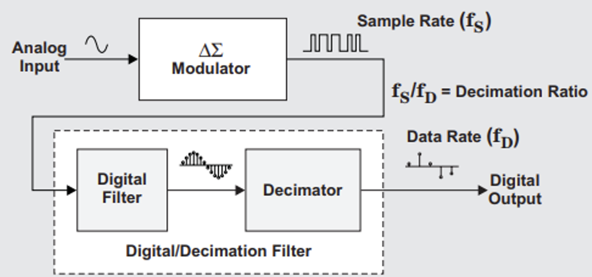
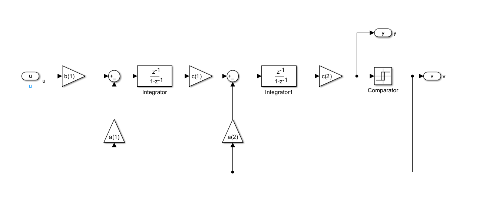
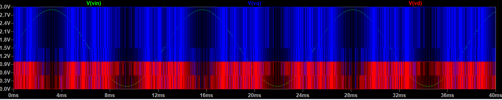
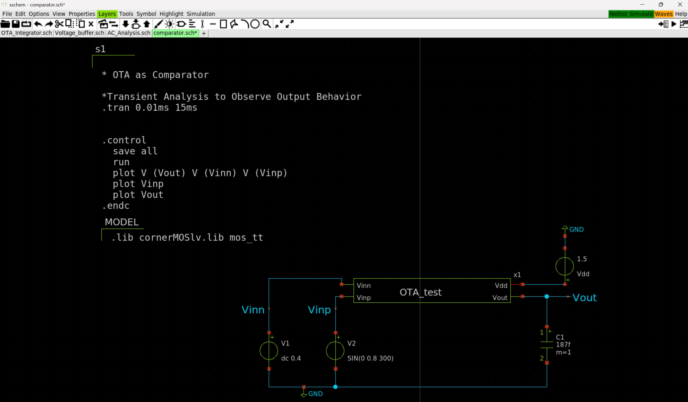
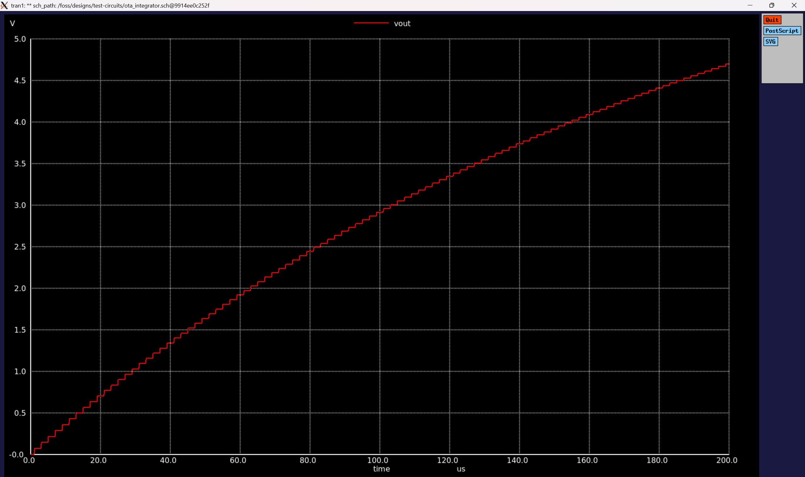

flowchart LR
A(ADXL335) --> B(ADS1115)
B --> C(ESP8266)
C --> D{Measurement}
D --> E(Thonny Micropython)
D --> F(Arduino IDE C)
7 MBSE of a Delta Sigma Modulator based IC Design
7.1 Objective
IC level designing of an ADC based on ADS1115, understanding the working principle of an ADC via circuit simulations and an IC design in xschem based on SG13G2 package. SG13G2 is a 130nm process architecture based package developed by IHP.
7.2 System Overview
The modular board-level sensor system illustrated in Figure 1 is designed for capturing and processing acceleration data using a combination of hardware and software components. The system begins with the ADXL335, a 3-axis analog accelerometer, which measures acceleration and provides an analog voltage output. This signal is then converted into a digital format by the ADS1115, a high-resolution 16-bit ADC, ensuring accurate data transmission. The ESP8266, a Wi-Fi-enabled microcontroller, receives this digitized data, processes it, and facilitates further measurement analysis. The system supports two different programming environments: Thonny MicroPython, which allows for Python-based scripting and quick prototyping, and Arduino IDE C, which enables traditional C-based firmware development. The flexibility of this system makes it highly adaptable for IoT applications, real-time monitoring, and embedded sensor-based projects, providing a reliable platform for data acquisition and wireless transmission.
7.3 Introduction
A Sigma-Delta (ΣΔ) Modulator is an advanced signal conversion system commonly used for high-resolution A/D and D/A conversion. It employs oversampling, quantization, and noise shaping to achieve superior performance, particularly in applications requiring precise signal representation. Unlike conventional Nyquist-rate converters, ΣΔ modulators sample the input signal at a much higher rate, reducing the need for complex anti-aliasing filters. The noise shaping technique pushes quantization noise to higher frequencies, where it can be easily removed by digital filtering, leading to a significant improvement in signal-to-noise ratio (SNR). In A/D conversion, the Sigma-Delta modulator first filters the input analog signal to remove high-frequency components, preventing aliasing. The filtered signal is then sampled at a high rate and quantized, often using a simple 1-bit or multi-bit quantizer. A feedback loop, consisting of an integrator and a digital filter, continuously adjusts the quantization error, shaping the noise spectrum. The resulting digital output, though initially at a high sampling rate, is then passed through a decimation filter, which reduces the sampling rate while maintaining high resolution. In D/A conversion, the process is reversed. A digital input sequence is converted to an analog signal using a Digital-to-Analog Converter (DAC), followed by an analog hold stage that maintains each sample value for a short duration. The output is then passed through a reconstruction filter, which smooths the signal and removes high-frequency artifacts introduced during digital processing.
7.4 Working principle of Sigma-Delta (Σ∆) Modulator
The process begins with an analog input signal, which is fed into a Sigma-Delta (ΣΔ) Modulator. This modulator operates at a significantly higher sampling rate (fₛ) compared to the Nyquist rate. The oversampling technique effectively reduces the impact of quantization noise by spreading it over a wider frequency range. A key feature of the modulator is noise shaping, which shifts quantization noise to higher frequencies, where it can be filtered out in the digital domain.
7.5 Building Block of Sigma-Delta (Σ∆) Modulator

Sigma-Delta modulation is widely used in high-resolution applications such as audio processing, communications, and precision measurement due to its ability to reduce quantization noise and enhance signal quality. In A/D conversion, the analog input signal first undergoes anti-alias filtering, which removes unwanted high-frequency components that could cause aliasing during sampling. The filtered signal is then sampled at a high rate, often exceeding the Nyquist rate, capturing discrete points of the waveform. This sampled signal is then quantized, where each sample is assigned a digital value, producing a sequence such as 2, 7, 0, 15, etc. The high sampling rate and noise shaping techniques used in Sigma-Delta modulation push quantization noise to higher frequencies, improving resolution after digital filtering.
The D/A conversion process reverses this operation. The digital sequence is first converted back into an analog signal using a Digital-to-Analog Converter (DAC). Since the DAC output consists of discrete steps, an analog hold stage maintains each sample value momentarily. This is followed by a reconstruction filter, which smooths the signal, removing high-frequency components and restoring the continuous analog waveform.
By utilizing oversampling and noise shaping, Sigma-Delta modulators achieve higher accuracy and lower distortion than conventional converters. These characteristics make them ideal for applications requiring high dynamic range and low power consumption, such as audio codecs, RF systems, and industrial sensors.
7.6 Behavioural Model of Sigma-Delta Modulator

The Sigma-Delta (ΣΔ) Modulator is an essential technique for high-resolution analog-to-digital (A/D) conversion, widely used in applications such as audio processing, biomedical instrumentation, and communication systems. The behavioral model of a Sigma-Delta Modulator consists of two primary components: an oversampling modulator and a digital/decimation filter, both working together to produce a high-resolution digital output. The process begins with an analog input signal that enters the ΣΔ Modulator, which operates at a significantly higher sampling rate (fₛ) than the Nyquist rate. This technique, known as oversampling, helps distribute quantization noise across a broader frequency range. Inside the modulator, a feedback loop with a loop filter and a quantizer processes the input signal, shaping the quantization noise by pushing it to higher frequencies, a process referred to as noise shaping. The output of the ΣΔ Modulator is a high-rate digital signal containing substantial high-frequency noise, which is then refined through a digital filter and a decimator. The digital filter removes unwanted high-frequency components, while the decimator reduces the sampling rate from fₛ to fᴅ, optimizing the signal for further processing while maintaining high resolution.
The block diagram illustrates this process step by step. The analog input first enters the ΣΔ Modulator, which operates at a high sampling rate (fₛ) to perform noise shaping and quantization. The resulting high-frequency digital signal then passes through a digital filter, which smooths the data by eliminating unnecessary noise. After filtering, the decimator reduces the sampling rate to an optimal data rate (fᴅ) while preserving signal integrity, ultimately producing a high-resolution digital output. The decimation ratio (fₛ / fᴅ) determines the extent of data rate reduction, ensuring efficient conversion.
The Sigma-Delta Modulator offers several advantages over conventional ADC methods. It achieves high resolution through oversampling and noise shaping, effectively minimizing quantization noise. Unlike traditional ADCs that rely on precise analog components, the ΣΔ Modulator leverages digital signal processing, simplifying circuit design and improving power efficiency. Due to its low power consumption and superior noise performance, it is widely used in applications such as high-fidelity audio ADCs and DACs, biomedical monitoring systems (e.g., ECG and EEG devices), industrial sensor measurements, and wireless communication receivers. Therefore, the Sigma-Delta Modulator is a highly effective method for A/D conversion, providing a high-resolution, low-noise digital output. The block diagram effectively illustrates its functionality, highlighting how the combination of oversampling, noise shaping, digital filtering, and decimation achieves superior signal processing performance. This makes Sigma-Delta Modulators the preferred choice for applications requiring precision, efficiency, and low power consumption in modern audio, medical, industrial, and communication technologies.
7.7 Simulink Implementation of 1st order Sigma-Delta Modulator
The Simulink implementation of a first-order Sigma-Delta (ΣΔ) Modulator, a widely used technique in analog-to-digital conversion (ADC) and digital signal processing (DSP). The system begins with an input signal, represented as u=1, which is processed through a summation block. This block subtracts the feedback signal v from the input to generate an error signal. The error signal is then passed to an integrator, whose transfer function represents a discrete-time integration process. The integrator accumulates the difference over time, effectively shaping the quantization noise.
Next, the signal moves to a comparator, which acts as a quantizer by converting the continuous signal into a binary output, either 0 or 1. This digital output, denoted as v, is then fed back into the summation block, closing the loop and ensuring a continuous correction of errors. The feedback mechanism plays a crucial role in noise shaping, pushing quantization noise to higher frequencies where it can be effectively filtered. The first-order Sigma-Delta Modulator utilizes oversampling to improve resolution beyond the Nyquist rate, making it suitable for applications such as high-resolution ADCs, audio processing, and sensor data conversion. While this is a first-order implementation, higher-order versions offer even better noise shaping. The fundamental advantage of this system is its ability to convert an analog input into a high-frequency stream of digital bits while minimizing quantization errors through feedback and integration.
7.8 Matlab output of 1st Order Sigma-Delta Modulator

The output of a first-order Sigma-Delta (ΣΔ) Modulator, depicting the relationship between the continuous input signal (u) and the modulated digital output (v) over time. The x-axis represents normalized time (t/T), while the y-axis indicates amplitude. The blue curve represents the input signal, which appears to be a low-frequency sinusoidal wave, whereas the orange signal represents the modulated output, characterized by rapid switching between +1 and -1. This high-frequency switching in the output is a key feature of Sigma-Delta modulation, where the density of these transitions varies depending on the amplitude of the input signal.
When the input signal reaches its peak, the output consists of a higher density of positive pulses, whereas near zero crossings, the switching between +1 and -1 becomes more balanced. Similarly, for negative amplitudes, the density of negative pulses increases. This behaviour is known as Pulse Density Modulation (PDM) and is a direct consequence of the feedback and integration mechanism in the Sigma-Delta Modulator. The high-frequency quantization noise generated by this process is shaped and pushed to higher frequencies, allowing it to be filtered effectively in post-processing.
This type of modulation is widely used in applications requiring high-precision analog-to-digital conversion, such as high-resolution ADCs, audio signal processing, and sensor data acquisition. The key advantage of a Sigma-Delta Modulator is that it allows a simple 1-bit quantizer to achieve high resolution through oversampling and noise shaping, making it ideal for modern digital signal processing systems.
7.9 Spectral Analysis of 1st Order Sigma-Delta Modulator by using FFT with OSR=512

The Spectral Analysis of a first-order Sigma-Delta Modulator using Fast Fourier Transform (FFT) with an Oversampling Ratio (OSR) of 512. The x-axis denotes the normalized frequency (f/fs), while the y-axis represents the Discrete Fourier Transform (DFT) magnitude in dBFS (decibels relative to full scale). The plot shows a strong low-frequency signal component at the leftmost part of the graph, corresponding to the desired input signal, while the rest of the spectrum contains quantization noise that increases towards higher frequencies. This noise shaping characteristic is a fundamental property of Sigma-Delta modulation, where quantization noise is pushed towards higher frequencies, making it easier to remove with a low-pass filter. The high OSR value of 512 indicates significant oversampling, which helps in reducing in-band noise and improving resolution. The plot confirms that the first-order modulator exhibits a first-order noise shaping behaviour, where the noise power increases with frequency, validating the efficiency of Sigma-Delta modulation in enhancing signal quality through oversampling and noise shaping techniques.
7.10 Simulink Implementation of 2nd Order Sigma-Delta Modulator

An important part of high-resolution analog-to-digital conversion (ADC) is a Second-Order Sigma-Delta (ΣΔ) modulator, which is represented by this Simulink model. The modulator’s behavior is determined by scaling coefficients, a feedback loop, a comparator, and two integrators. A scaling factor b (1) is applied to the input signal (u) before it is fed into the first integrator, which then accumulates the signal and sends it to the second stage. The second integrator increases the suppression of in-band quantization noise, which further improves the noise shaping. feedback coefficients a(1) and a(2)are incorporated by both integrators, which improve performance and control system stability. The comparator receives the output of the second integrator, multiplied by c (2), and uses pulse-density modulation (PDM) to transform the continuous signal into a digital bitstream (v). The feedback loop shapes the quantization noise and makes sure the system dynamically modifies its output to follow the input signal. This second-order design offers superior noise shaping than a first-order ΣΔ modulator. It does this by moving more quantization noise to higher frequencies, where it may be filtered out, increasing the signal-to-noise ratio (SNR). Applications for this structure include precise measurement, biological signal processing, and audio ADCs.
7.11 Matlab output of 2nd Order Sigma-Delta Modulator

The output of a second-order Sigma-Delta(ΣΔ) Modulator, showing the relationship between the continuous input signal and the high-frequency modulated digital output. The x-axis represents time, while the y-axis represents amplitude, with the modulator’s output switching between +1+1+1 and −1-1−1. Compared to the first-order modulator, the second-order modulator provides improved noise shaping, leading to a more dynamic and concentrated pulse density modulation (PDM). The digital output exhibits a higher density of transitions where the input amplitude is larger and fewer transitions where the signal is near zero. This behaviour results from the double integration process, which enhances quantization noise shaping by pushing even more noise energy to higher frequencies, allowing for more effective filtering. The increased pulse clustering reduces in-band noise, improving the signal-to-noise ratio (SNR) and making the second-order Sigma-Delta Modulator suitable for high-resolution analog-to-digital conversion in applications such as audio processing and high-precision sensors.
7.12 Spectral Analysis of 2nd Order Sigma-Delta Modulator by using FFT with OSR=512

The Spectral Analysis of a Second-Order Sigma-Delta (ΣΔ) Modulator using Fast Fourier Transform (FFT) with an Oversampling Ratio (OSR) of 512. The x-axis denotes the normalized frequency (f/fs), while the y-axis represents the DFT magnitude in dBFS (decibels relative to full scale). The plot shows a dominant low-frequency signal at the left most part, which corresponds to the input signal, while the rest of the spectrum is primarily quantization noise. Compared to a first-order modulator, the second-order ΣΔ modulator exhibits stronger noise shaping, with a more significant reduction in in-band quantization noise. The noise floor initially remains very low and increases at higher frequencies, pushing most of the noise energy toward the higher spectrum where it can be effectively filtered. This enhanced noise shaping behaviour improves the signal-to-noise ratio (SNR) and allows for higher resolution in analog-to-digital conversion. The results confirm that the second-order Sigma-Delta Modulator achieves better performance than the first-order modulator, making it more suitable for applications requiring high-precision signal processing, such as audio ADCs and sensor measurements.
7.13 LTSpice System Design of 1st Order Sigma-Delta Modulator

In signal processing applications, the LTSpice simulation of a First-Order Sigma-Delta (ΣΔ) modulator depicted in the figure is a basic circuit for analog-to-digital conversion (ADC). To improve resolution and shape the quantization noise, the design incorporates a switched-capacitor integrator, a comparator, and a D flip-flop for feedback. To ensure accurate charge transfer and reduce clock feedthrough effects, a sequence of switches controlled by non-overlapping clock signals (phi1 and phi2) sample the analog input signal (Vin).
The integrator (op-amp), which is at the center of the circuit, accumulates the error between the input and feedback signal (Vfb). In the process of charge redistribution, the capacitors (Cs1 and Cl1) are essential. A comparator receives the integrator output (Vx1) and decides whether the output should be a digital “1” or “0.” The D flip-flop (A1) then latches this decision, guaranteeing a steady digital output (Vd) in time with the clock signals. By using the oversampling and noise shaping principles, the modulator continuously modifies the output bitstream to gradually resemble the input rather than immediately encoding the information.
The simulation configuration comprises parameter settings for the following: input frequency (80 Hz), common-mode voltage (VCM), supply voltage (VDD = 3V), and capacitor values (Cs1 =Cl1 = 1pF), 0.25pF. The .tran 40m uic command captures enough data for FFT analysis by doing a transient analysis for 40 milliseconds. By ensuring that only pertinent node voltages (such as Vx1, Vphi1, Vphi2, Vq, Vd, Vfb, and Vin) are captured, the .save command maximizes simulation efficiency. In order to dynamically modify the output and lessen in-band quantization noise, the feedback loop is essential. We can investigate quantization noise shaping, oversampling effects, and system stability using this first-order Sigma-Delta modulator implementation in LTSpice, which makes it a crucial tool for high-resolution ADC design. ΣΔ modulation is perfect for audio processing, sensor data collection, and communication systems because it uses a simpler circuit and achieves higher resolution than typical Nyquist-rate ADCs.
7.14 LTSpice Output of 1st order Sigma-Delta Modulator

The input and output signals of a First-Order Sigma-Delta (ΣΔ) modulator, which uses noise shaping and oversampling techniques for high-resolution analog-to-digital conversion (ADC), are represented by the graph. The analog input signal is represented by the green waveform (V(vin)), which is a sinusoidal waveform that is digitalized. In order to show how the modulator can shape quantization noise, the blue waveform (V(vq)) represents the internal quantized signal, which is influenced by the integrator and feedback loop. As the amplitude of the input signal changes, so does the density of high (1s) and low (0s) pulses in the final pulse-density modulated (PDM) output, which is represented by the red waveform (V(vd)). While the bitstream maintains a balanced distribution of 1s and 0s around zero crossings, this modulation approach guarantees that there are more 1s at higher input levels using the noise shaping concept, the ΣΔ modulator efficiently drives quantization noise to higher frequencies. This improves the in-band signal-to-noise ratio (SNR), and high-frequency noise is subsequently eliminated using low-pass decimation filtering. For low-power applications where great dynamic range and power efficiency are crucial, such as sensor interface, low-frequency audio processing, and biomedical data acquisition, this technique makes first-order ΣΔ modulators perfect.
7.15 LTSpice System Design of 2nd Order Sigma-Delta Modulator
In high-precision analog-to-digital conversion (ADC), a second-order sigma-delta (ΣΔ) modulator is a crucial part, as shown in this LTSpice circuit diagram. A comparator, a D flip-flop, operational amplifiers, and switched-capacitor circuits are all incorporated into the design to create a feedback loop that improves quantization accuracy via noise shaping. Proper charge transfer is ensured by processing the sine wave input signal (Vin) through a switched-capacitor network that is regulated by non-overlapping clock signals (phi1 and phi2). The first step is a switched-capacitor integrator, in which the difference between the input and feedback signal (Vfb) is accumulated by capacitors (Cs1) and an operational amplifier. After that, a second integrator pushes quantization noise to higher frequencies, further fine-tuning the noise shape.
The analog signal is subsequently transformed into a pulse-density modulated (PDM) digital output by passing the second-stage output (Vx2) via a comparator. To provide steady output, a D flip-flop (DFF) synchronizes the bitstream (Vd) with the clock signals. By reducing quantization mistakes and increasing accuracy, the feedback loop continuously improves the signal. The transient analysis (.tran 40m uic) guarantees a 40ms simulation run without determining the DC operating point, enabling accurate modulator behavior observation. Evaluating the output using an FFT analysis aids in determining how well noise shaping and overall performance work. This second-order arrangement greatly lowers in-band quantization noise in comparison to a first-order modulator, moving it toward higher frequencies where it may be efficiently filtered.
7.16 OTA Overview
The 5-Transistor Operational Transconductance Amplifier (5T OTA) is a compact and power-efficient circuit widely used in analog signal processing applications. It consists of a differential input pair (M1, M2), an active load (M3, M4), and a current source (M5, M6, and I_bias), making it a simple yet effective voltage-to-current amplifier. The circuit operates by amplifying the differential input voltage and converting it into an output current, with the active load enhancing the voltage gain. Due to its minimal transistor count, the 5T OTA offers advantages such as low power consumption, compact design, and ease of integration in ICs. It is commonly employed in low-power filters, sensor interfaces, and biomedical applications. However, it has limitations, including lower gain and reduced common-mode rejection ratio compared to more complex OTA architectures. Despite these trade-offs, the 5T OTA remains a fundamental building block in analog circuit design, particularly in low-power and portable applications.
7.17 Basics of 5T OTA
7.17.1 Purpose of an OTA
An Operational Transconductance Amplifier (OTA) is an analog circuit that converts a differential input voltage (V_in+ - V_in-) into an output current (I_out). Unlike a traditional operational amplifier (op-amp), which provides a voltage output and often relies on negative feedback for operation, an OTA’s output is a current, making it suitable for applications such as voltage-controlled amplifiers, filters, and signal processing in low-power systems.
7.17.2 5T OTA Topology
The 5-Transistor OTA (5T OTA) is a simple yet efficient differential amplifier with a current mirror load. It consists of the following key components:
- Input Differential Pair (M1, M2): These two transistors form the differential input stage, amplifying the voltage difference between the input terminals.
- Tail Current Source (M5): This transistor sets the bias current for the differential pair, controlling the overall transconductance (g_m) of the OTA.
- Current Mirror Load (M3, M4): These two transistors form an active load that converts the differential currents from the input pair into a single-ended output current.
7.18 Sizing an OTA
Operational Transconductance Amplifier (OTA) sizing involves determining the W/L (Width/Length) ratios of each NMOS and PMOS transistor in the circuit to meet desired performance specifications such as gain, bandwidth, power consumption, and transconductance (g_m). Using the MOSFET sizing script available at MOSFET Sizing Tool , we can compute these ratios based on the process parameters and design constraints.
7.19 Testing an OTA
Based on the derived W/L ratios, we implemented a 5T OTA model in Xschem, ensuring proper transistor sizing and connectivity. A dedicated symbol (OTA_test) was created for seamless integration into larger circuits. The OTA was tested through DC operating point analysis, AC analysis for gain and bandwidth, transient response evaluation, and common-mode rejection ratio (CMRR) measurements to verify performance. Simulation results confirmed that the OTA operates as expected, making it suitable for further integration into analog signal processing applications.
7.20 AC analysis of an OTA
To evaluate the frequency response of the 5T OTA, we performed an AC analysis using Xschem and simulated the open-loop gain. The analysis involved applying a small-signal AC input and sweeping the frequency over a wide range. The gain was then plotted on a logarithmic scale to observe the frequency response characteristics. From the plot, we obtained a DC gain of approximately 40 dB, confirming that the OTA provides a significant amplification factor in the low-frequency region. The frequency response also shows a characteristic roll-off at higher frequencies, which defines the unity-gain bandwidth and overall performance of the OTA. This AC analysis is essential for understanding the amplifier’s stability, bandwidth, and suitability for specific analog applications.
7.21 OTA as a Voltage Buffer
To validate the 5T OTA’s performance, we designed a voltage buffer testbench using Xschem. The OTA was configured to operate in its linear region, where it acts as a unity-gain amplifier. A DC sweep was applied to the input (Vin), and the corresponding Vout was plotted to verify the behavior. The simulation results confirm that the OTA maintains a nearly linear voltage transfer characteristic, indicating that it effectively functions as a buffer. This test demonstrates the OTA’s ability to faithfully reproduce input variations with minimal distortion, making it suitable for applications such as signal conditioning and impedance isolation.
7.22 OTA as a Comparator

To further validate the OTA’s functionality, we designed a test bench to evaluate its performance as a comparator. Given that the OTA architecture inherently supports differential input processing, it can be used for comparison operations, as seen in IDSM1 and IDSM2. In the test setup, a sine wave signal was applied to one input while a DC reference voltage was provided to the other. The simulation results confirm that the OTA successfully acts as a comparator, producing a high or low output depending on whether the input signal is above or below the reference voltage. The observed behavior aligns with expected theoretical results, demonstrating the OTA’s capability in signal processing and decision-making applications such as analog-to-digital conversion and threshold detection.
7.23 OTA as an Integrator

Now that the OTA has been verified to function as expected, we proceeded to design an OTA-based integrator using a switched capacitor integrator configuration. The circuit was implemented and simulated to observe the integration of an input signal over time. The results confirm that the OTA successfully performs the integration operation, producing a steadily increasing output voltage, as expected from an ideal integrator. The stepped nature of the output in the simulation is a characteristic of the switched capacitor approach, demonstrating charge accumulation over discrete time steps.
7.24 Switched Capacitor Integrator
The behavior of the OTA as a switched-capacitor integrator is not working as expected and exhibits leaky behavior.
A switched-capacitor integrator is a circuit that performs the integration of an input voltage signal using capacitors and switches controlled by a clock signal. It mimics the behavior of a continuous-time integrator in the discrete-time domain. The integration process occurs in three phases: sampling, charge transfer, and accumulation. During the sampling phase, a capacitor charges to the input voltage, and in the transfer phase, this charge is moved to the integration capacitor, resulting in a cumulative voltage change. However, in the current implementation, the integrator shows leakage, meaning the charge is not being properly retained in the integration capacitor. This could be due to charge injection from the switches, insufficient capacitance values, or non-idealities in the OTA itself. Further debugging and parameter tuning are required to achieve the expected integration behavior.
7.25 Conclusion
The design and implementation of an OTA-based switched-capacitor integrator proved to be a challenging endeavor. While the theoretical analysis and initial circuit design were based on the ideal behavior of an OTA, including non-idealities and mismatches in the OTA’s performance, deviated significantly from the expected results. These non-idealities introduced complexities that hindered the intended operation of the switched-capacitor integrator.
Debugging this design highlighted the importance of accounting for OTA both the design and simulation phases. Future efforts could focus on refining the OTA design to address these limitations, as well as exploring circuit-level compensation techniques to improve the performance of the integrator. With further optimization and a deeper understanding of the OTA’s behavior, the implementation of a switched-capacitor integrator using an OTA remains a promising approach for high-performance analog signal processing.
7.26 References
- https://iic-jku.github.io/analog-circuit-design/#sec-basic-ota
- https://iic-jku.github.io/analog-circuit-design/sizing/sizing_mosfet_diode-preview.html
- B. E. Boser and B. A. Wooley. The design of sigma-delta modulation analog-to-digital converters. IEEE Journal of Solid-State Circuits, 23(6):1298–1308, December 1988.
- Bernhard E. Boser. Eecs247: Analog-digital interface integrated circuits. Course notes, University of California Berkeley, February 2003.
- Michael Clifford. Fundamental principles behind the sigma-delta adc topology: Part 1. Technical report, Analog Devices (AD), January 2016.
- Michael Clifford. Fundamental principles behind the sigma-delta adc topology: Part 2. Technical report, Analog Devices (AD), February 2016.